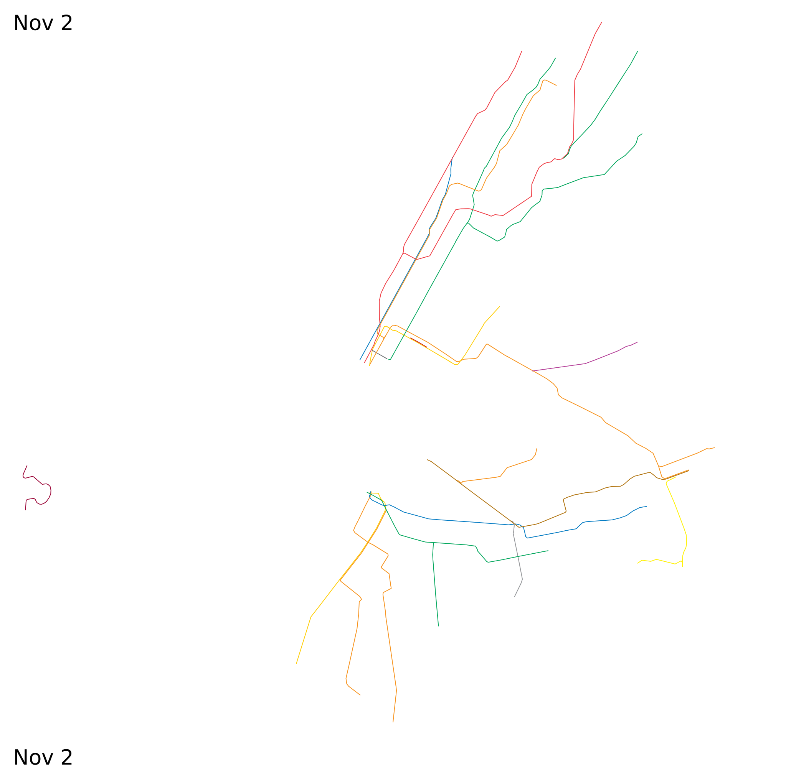

Miscellaneous (not strictly rapid transit) timelines:
High speed rail in Asia and Europe, 1965-2015

Regional passenger rail timelines:
Northeast US, 1835-2010
 California, 1860-2010
California, 1860-2010 Streetcar and trolleybus timelines:
Streetcar and trolleybus timelines:Boston, 1840-2010
 San Francisco, 1860-2010
San Francisco, 1860-2010
New York streetcar abandonment,
1932-1957
 Hurricane Sandy rapid transit recovery,
Hurricane Sandy rapid transit recovery,October 2012-June 2013
 Nonstop flights from New York
1930-2010
 Routes using Harvard Transit Tunnel,
Routes using Harvard Transit Tunnel,1920-2010

Other maps:
Scale comparison of selected streetcar systems, 2018


 Scale comparison of selected walled cities, 500 BCE-1800 CE
Scale comparison of selected walled cities, 500 BCE-1800 CE


 Google maps:
Google maps:
Scale comparison of selected walled cities, 500 BCE-1800 CE
Google maps:
Note: above maps not all at same scale.
See also: historical rapid transit timelines